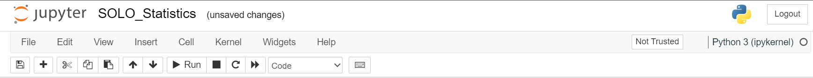
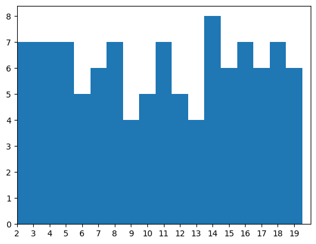
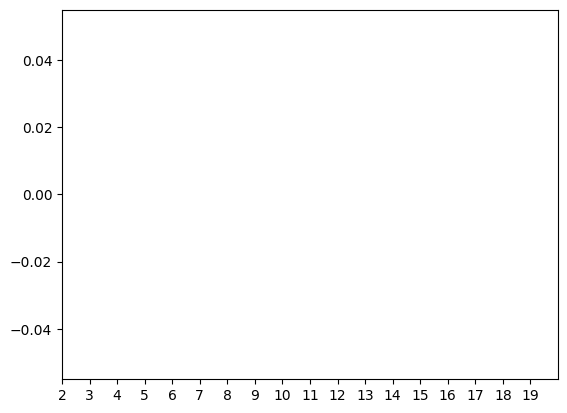
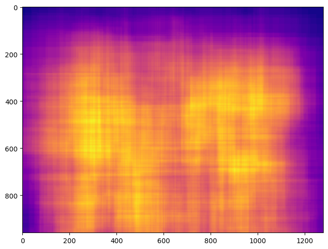
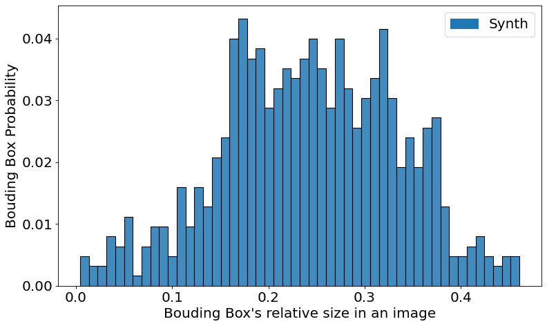
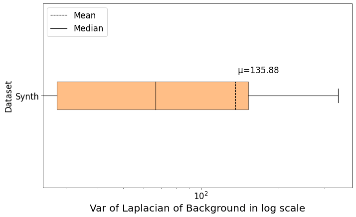
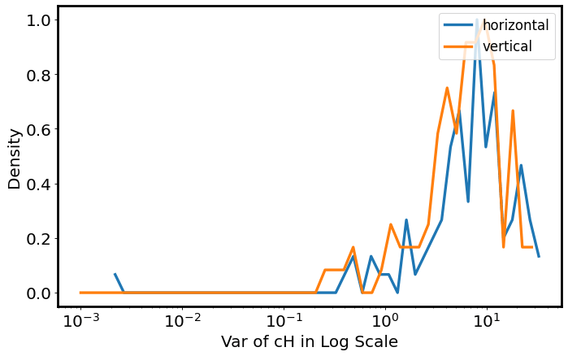
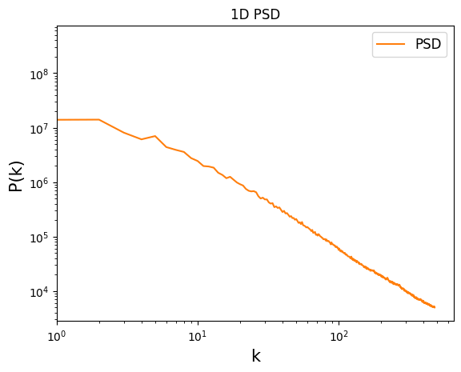
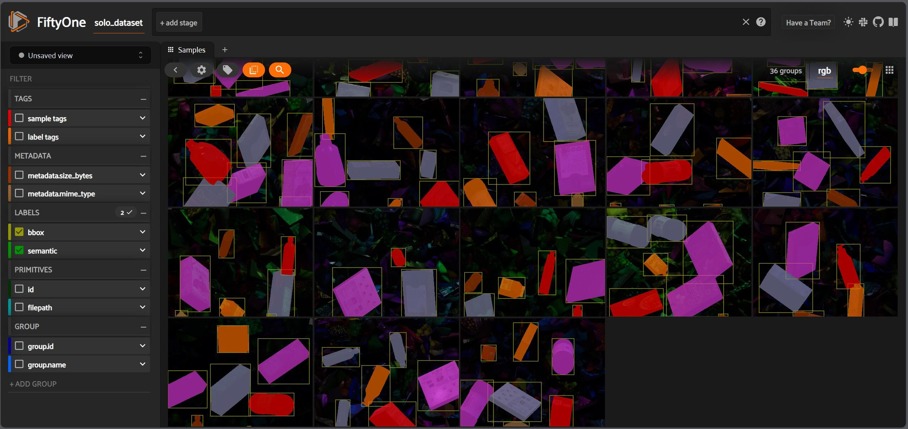
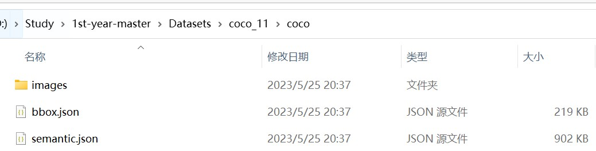

正文
安装环境：
1 2 3 4 conda create -n pysolotools_env python=3.8
从 Unity-Technologies/pysolotools: Python toolchain for SOLO. (github.com) 下载仓库，cmd 中转到该目录下，打开 Jupyter Notebook：
打开 examples/SOLO_Statistics.ipynb：

将 data_dir_path 里的值设置为所合成数据集的路径，开跑！
1 2 3 4 5 import matplotlib.patches as mpatchesimport matplotlib.pyplot as pltimport numpy as npimport pandas as pdimport seaborn as sns
1 2 3 4 5 6 7 8 9 10 11 12 from pysolotools.consumers.solo import Solofrom pysolotools.stats.analyzers.image_analysis_analyzer import (from pysolotools.stats.analyzers.bbox_analyzer import (from pysolotools.stats.handler import StatsHandler
Initialize SOLO object
1 2 data_dir_path = r"XXXX"
Object Detection Stats
BBoxCountStatsAnalyzer 类用于分析检测结果中 bounding box（边界框）的数量 。这个类接受一个 Solo 对象作为参数，该对象包含了所有的检测结果，即一系列目标检测的 bounding box 区域。通过 bbox_count_analyzer 对象，可以获得检测结果中 bounding box 的数量统计信息，例如最小值、最大值、平均值和方差等。BBoxSizeStatsAnalyzer 类用于分析检测结果中 bounding box 的大小分布情况 。它没有接受参数，可以用于任何包含 bounding box 信息的数据集。通过 bbox_size_analyzer 对象，可以获得检测结果中 bounding box 大小的统计信息，例如最小值、最大值、平均值和方差等。BBoxHeatMapStatsAnalyzer 类用于生成针对检测结果中 bounding box 的热图 。它也没有接受参数，可以用于任何包含 bounding box 信息的数据集。通过 bbox_hmap_analyzer 对象，可以将检测结果中 bounding box 的位置信息映射到一张图片上，并且可视化出 bounding box 的密度分布情况。
1 2 3 bbox_count_analyzer = BBoxCountStatsAnalyzer(solo)
StatsHandler 类可以接受一个包含统计信息的 Solo 对象作为参数，并提供了 handle 方法用于处理分析器（Analyzer）列表。在本例中，StatsHandler 对象的参数是 solo，即目标检测结果数据集。另外，handle 方法接受一个 Analyzer 对象列表作为参数，分别是 bbox_count_analyzer、bbox_hmap_analyzer 和 bbox_size_analyzer。handle 方法返回一个结果对象，其中包含了以一定形式储存的三种分析器的统计信息数据。例如，bbox_count_analyzer 可以输出 bounding box 数量的最大值、最小值和平均值，bbox_hmap_analyzer 可以输出 bounding box 密度热力图数据，bbox_size_analyzer 可以输出 bounding box 大小的统计信息。result 就是这些统计信息的集合。
1 2 3
1 2 3 print (f'Total Sequences: {solo.metadata.totalSequences} ' )print (f'Total Frames: {solo.metadata.totalFrames} ' )print (f'Frames Per Sequence: {solo.metadata.totalFrames / solo.metadata.totalSequences} ' )
Total Sequences: 100
Total Frames: 100
Frames Per Sequence: 1.0
Categories in Dataset
1 2 3 4 categories = solo.categories()"index" )'Label' ]
Label
1
drink_whippingcream_lucerne
2
lotion_essentially_nivea
3
craft_yarn_caron_01
4
cereal_cheerios_honeynut
5
candy_minipralines_lindt
6
pasta_lasagne_barilla
7
drink_greentea_itoen
8
snack_granolabar_naturevalley
9
snack_biscotti_ghiott_01
10
cleaning_snuggle_henkel
这段代码使用了前面统计分析工具的结果对象 bbox_counts，并基于此对数据集中 bounding box 的数量分布进行可视化：
1 2 3 4 5 6 7 8 9 10 11 12 13 14 15 16 17 18 19 20 "BBoxCountStatsAnalyzer" ]print (f'Total count of objects in dataset: {bbox_counts.get_total_count()} ' )min (20 , solo.metadata.totalFrames)list (range (2 , end))1 , 1 )1 )2 , end)print ("\nObjects Per Frame:" )
Total count of objects in dataset: 625
Objects Per Frame:

下一张图显示了每个帧中有多少特定对象，在这种情况下，我们正在寻找“cereal_cheerios_honeynut”标签类别。
这里应该在生成数据集的时候哪里出错了，emmm啥也没有。
1 2 3 4 5 6 7 8 9 k = list (categories.keys())0 ]])1 , 1 )1 )2 , end)print (f"\n{categories[k[0 ]]} Per Frame:" )
cereal_cheerios_honeynut Per Frame:

BBox Heatmap
这段代码使用了前面统计分析工具的结果对象 bbox_heatmap，并基于此对 bounding box 的热图进行可视化。其中，bbox_heatmap_norm 用于将原始数据映射到 0-1 范围内，便于可视化。
1 2 3 4 5 6 7 8 9 "BBoxHeatMapStatsAnalyzer" ]max ()100 , figsize=(8 ,8 ))0 ], cmap="plasma" , )
这段代码使用了 bbox_heatmap 对象中的数据统计结果，以可视化的方式展示了 bounding box 密度分布情况。这个可视化手段可以帮助用户更好地了解数据集中目标检测结果的分布密度情况。

Bounding Box Size Distribution
1 2 3 4 5 6 7 8 9 10 11 12 13 14 15 16 17 18 19 20 21 22 23 24 25 26 27 28 29 30 31 32 "BBoxSizeStatsAnalyzer" ]"Synth" , 1 /len (bbox_size_dist)] for x in bbox_size_dist]'val' , 'type' , 'w' ])80 , figsize=(10 ,6 ))"val" , hue="type" , weights='w' ,50 , multiple="layer" , alpha=.85 , ax=ax, legend=None )'axes.prop_cycle' ].by_key()['color' ]0 ], label='Synth' )18 )"Bouding Box's relative size in an image" , fontsize=18 )"Bouding Box Probability" , fontsize=18 )18 )18 )

Initialize Analyzers and Handler
这段代码使用了三个不同的图像分析工具，分别对一个图像进行处理，并将它们的结果传递给 StatsHandler 处理器进行统一处理。这个手段可以帮助用户更全面地了解图像的本质特征
1 2 3 4 5 6 7 8 9
Image Analysis Stats
1 2 bbox_var = result["LaplacianStatsAnalyzer" ]["bbox_var" ]"LaplacianStatsAnalyzer" ]["img_var" ]
Laplacian
1 2 3 4 5 6 7 8 9 10 11 12 13 14 15 16 17 18 19 20 21 22 23 24 25 26 27 28 29 30 31 32 33 34 35 36 37 38 39 40 80 , figsize=(10 ,6 ))0 ,patch_artist=True ,labels=["Synth" ],True , meanline=True , showfliers=False ,)'axes.prop_cycle' ].by_key()['color' ]'boxes' ][0 ].set_facecolor(colors[1 ])'boxes' ][0 ].set_alpha(0.50 )'medians' ][0 ].set_color('black' )'means' ][0 ].set_color('black' )'means' ][0 ].get_xydata()[1 ]' μ={:.2f}' .format (mean)0.05 ), fontsize=15 )'--' , linewidth=1 , color='black' , label='Mean' )'-' , linewidth=1 , color='black' , label='Median' )15 , loc="upper left" )15 )15 )'log' )f"Var of Laplacian of Background in log scale" , fontsize=18 )"Dataset" , fontsize=15 )

Wavelet
这段代码用于对一个图像进行小波变换并对其水平和垂直方向的 cH 系数进行直方图分析，然后将两个方向的直方图绘制在同一个图表中。
1 2 3 4 5 6 7 8 9 10 11 12 13 14 15 16 17 18 19 20 21 22 23 24 hist_list = []for coeff_type in ["horizontal" , "vertical" , "diagonal" ]:"WaveletTransformStatsAnalyzer" ][coeff_type]max ([min (coeff), np.finfo(float ).eps])), np.log10(max (coeff))))80 , figsize=(10 ,6 ))iter (plt.rcParams['axes.prop_cycle' ].by_key()['color' ])for hist, hist_type in zip (hist_list, ["horizontal" , "vertical" ,]):0 ] - min (hist[0 ]))/(max (hist[0 ])-min (hist[0 ]))1 ][1 :],norm_data, linestyle='-' , label=hist_type, linewidth=3 , color=next (colors))'log' )"upper right" , fontsize=15 )"Var of cH in Log Scale" , fontsize=18 )"Density" , fontsize=18 )18 )18 )2.5 )

Power Spectrum
这段代码用于计算一个图像的一维功率谱密度，使用可视化方式展示其频域特征。用户可以通过观察功率谱密度曲线来了解图像中不同频率成分所占比例的大小关系，以及在不同频率范围内的能量分布情况。
1 2 3 4 5 6 7 8 9 10 11 12 13 14 psd_1d = np.nanmean(result["PowerSpectrumStatsAnalyzer" ], axis=0 )100 )'axes.prop_cycle' ].by_key()['color' ])1 ], label="PSD" )12 )'log' )'log' )"P(k)" , fontsize=15 )"k" , fontsize=15 )"1D PSD" )1 , None ])

安装 OpenEXR（巨难装）、pysolotools-fiftyone：
1 2 3 4 conda activate pysolotools_env
开跑！
将生成的数据集放在一个文件夹中，不能有空格：D:\Study\1st-year-master\Datasets\solo_11。
终端输入：
1 pysolotools-fiftyone D:\Study\1st-year-master\Datasets\solo_11

本指南将引导您完成将数据集从 SOLO 格式转换为 COCO 格式的整个过程。我们将使用 Unity 的计算机视觉团队的 pysolotools 来完成这项任务。Pysolotools 是一个 Python 包，它提供了各种工具来处理、分析和转换使用 Perception 包生成的 SOLO 数据集。
1 solo2coco <SOLO_PATH> <COCO_PATH>
这玩意好像很吃性能，把该关的都关了，不然很容易挂。之后就能得到 COCO 格式的数据集：
